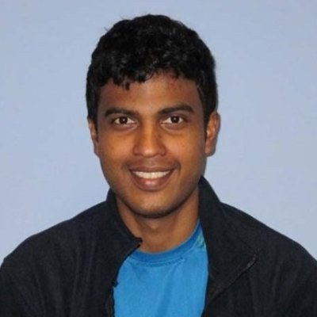

Pradeep Fernando
Ph.D. student, School of Computer Science
Georgia Institute of Technology
Office: Room 3201, KACB
Email: pradeepfn AT gatech DOT edu
Ph.D. student, School of Computer Science
Georgia Institute of Technology
Office: Room 3201, KACB
Email: pradeepfn AT gatech DOT edu
-
I am a third year PhD student working under the guidance of Prof. Ada Gavrilovska. My interested
research areas include Operating systems -- in particular the memory subsystem. In my recent projects I have looked in to developing
efficient system software abstractions for main memory and persistent memory(NVM) devices, with keen interest on topics such as fault-tolerance and
memory-consistency.
Research Interests
-
Operating Systems, Distributed Systems
Conference Publications
- NVStream: accelerating HPC workflows with NVRAM-based transport for streaming objects
P. Fernando, A. Gavrilovska, S. Kannan, G. Eisenhauer
In Proceedings of the 27th International Symposium on High-Performance Parallel and Distributed Computing[slides]
- Phoenix: Memory Speed HPC I/O with NVM
P. Fernando, S. Kannan, A. Gavrilovska, K. Schwan.
In Proceedings of the IEEE conference on High Performance Computing, Data,and Anlytics (HiPC). Hyderabad, India. December 2016. [slides]
- Improved Server Architecture for Highly Efficient Message Mediation
Hiranya Jayathilaka, Pradeep Fernando, Paul Fremantle, et. al.
ACM paper at iiWAS Vienna, Austria 2013.
Workshop Papers & Posters
- BISSA: Empowering web gadget communication with tuple spaces
U. Wickramasinghe, C. Wickramarachchi, P. Fernando, D. Sumanasena, et al.
IEEE paper at GCE, New Orleans,LA 2010 and ACM extended abstract at MGC, Bangalore, India 2010.
- Fast Restarts/ Recovery with NVM memory for HPC systems
P. Fernando,S. Kannan, A. Gavrilovska, K. Schwan.
Poster at NVM Workshop 2015. San Diego, CA.
Patents
- [in-submission][15/283,211] Fault Tolerance in Shared Memory
P. Fernando, M. Kim, H. Volos, J. Li
Graduate Internships
- [Summer' 15] Hewlett Packard Enterprise Labs - Mentors: Mijung Kim, Haris Volos, Jun Li
- [Summer' 14] NEC Labs, Princeton - Mentor: Nipun Arora
Awards
- Travel Grants: HiPC' 16, OSDI' 16, NVMW' 15